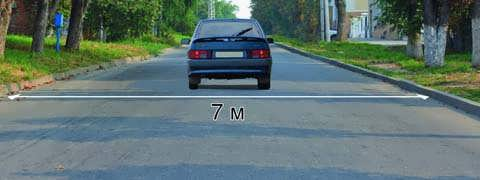
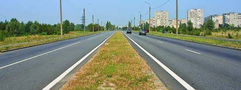
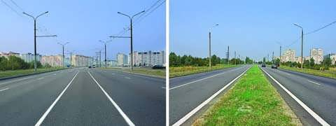

ՀՀ ՕՐԵՆՔ «ՃԱՆԱՊԱՐՀԱՅԻՆ ԵՐԹևԵԿՈՒԹՅԱՆ ԱՆՎՏԱՆԳՈՒԹՅԱՆ ԱՊԱՀՈՎՄԱՆ ՄԱՍԻՆ»
1․ «Ճանապարհային երթևեկության անվտանգության ապահովման մասին» ՀՀ օրենքի համաձայն ուղևոր է համարվում՝
2․ «Ճանապարհային երթևեկության անվտանգության ապահովման մասին» ՀՀ օրենքի համաձայն՝ «A» կարգի տրանսպորտային միջոցներ վարելու իրավունքի վկայական կարող է տրվել՝
3․ «Ճանապարհային երթևեկության անվտանգության ապահովման մասին» ՀՀ օրենքի համաձայն՝ «BE» կարգի տրանսպորտային միջոցներ վարելու իրավունքի վկայական կարող է տրվել՝
4․ «Ճանապարհային երթևեկության անվտանգության ապահովման մասին» ՀՀ օրենքի համաձայն` ճանապարհի երթևեկելի մաս է համարվում՝
5․ Պարտավո՞ր է արդյոք վարել սովորողն ուսումնական վարման ժամանակ ամրակապվել անվտանգության գոտիներով։
6․ «Ճանապարհային երթևեկության անվտանգության ապահովման մասին» ՀՀ օրենքի համաձայն՝ «D» կարգի և «D1» ենթակարգի տրանսպորտային միջոցներ վարելու իրավունքի վկայական կարող է տրվել՝
7․ Ճանապարհային երթևեկության անվտանգության ապահովման մասին» ՀՀ օրենքի համաձայն՝ հետիոտն է համարվում՝
8․ «Ճանապարհային երթևեկության անվտանգության ապահովման մասին» ՀՀ օրենքի համաձայն՝ տրանսպորտային միջոցի գործնական վարման սկզբնական ուսուցումը իրականացվում է՝
9․ «Ճանապարհային երթևեկության անվտանգության ապահովման մասին» ՀՀ օրենքի համաձայն` մերձակա տարածքից ելքը դեպի ճանապարհ համարվու՞մ է արդյոք խաչմերուկ։
10․ «Ճանապարհային երթևեկության անվտանգության ապահովման մասին» ՀՀ օրենքի համաձայն՝ «B», «C» և «D» կարգերի տրանսպորտային միջոցներ վարելու իրավունքի վկայական ունեցող անձանց թույլատրվում է դրանք վարել նաև կցորդներով, եթե կցորդի թույլատրելի առավելագույն զանգվածը չի գերազանցում
11․ «Ճանապարհային երթևեկության անվտանգության ապահովման մասին» ՀՀ օրենքի համաձայն՝ երթևեկելի մասով հեծանվորդներին արգելվում է երթևեկել՝
12․ «Ճանապարհային երթևեկության անվտանգության ապահովման մասին» ՀՀ օրենքի համաձայն՝ «B» և «C» կարգերի տրանսպորտային միջոցներ վարելու իրավունքի վկայական կարող է տրվել՝
13․ Ճանապարհային երթևեկության անվտանգության ապահովման մասին» ՀՀ օրենքի համաձայն՝ մոպեդ է համարվում՝
14․ «Ճանապարհային երթևեկության անվտանգության ապահովման մասին» ՀՀ օրենքի համաձայն՝ հարկադրված կանգառ է համարվում՝
15․ «Ճանապարհային երթևեկության անվտանգության ապահովման մասին» ՀՀ օրենքի համաձայն՝ անբավարար տեսանելիություն է համարվում՝
16․ «Ճանապարհային երթևեկության անվտանգության ապահովման մասին» ՀՀ օրենքի համաձայն՝ կանգառ է համարվում՝
17․ «Ճանապարհային երթևեկության անվտանգության ապահովման մասին» ՀՀ օրենքի համաձայն՝ ընդհանուր օգտագործման տրանսպորտային միջոց է համարվում՝
18․ «Ճանապարհային երթևեկության անվտանգության ապահովման մասին» ՀՀ օրենքի համաձայն՝ հետիոտներին են հավասարեցվում՝
19․ «Ճանապարհային երթևեկության անվտանգության ապահովման մասին» ՀՀ օրենքի համաձայն՝ կցորդ (կիսակցորդ) է համարվում՝
20․ «Ճանապարհային երթևեկության անվտանգության ապահովման մասին» ՀՀ օրենքի համաձայն՝ Հայաստանի Հանրապետության ճանապարհներին սահմանվում է՝
21․ «Ճանապարհային երթևեկության անվտանգության ապահովման մասին» ՀՀ օրենքի համաձայն՝ կայանում է համարվում՝
22․ «Ճանապարհային երթևեկության անվտանգության ապահովման մասին» ՀՀ օրենքի համաձայն՝ ՀՀ զինված ուժեր և այլ զորքեր զորակոչված անձանց «D» կարգի և «D1» ենթակարգի տրանսպորտային միջոցներ վարելու իրավունքի վկայական կարող է տրվել՝
23․ «Ճանապարհային երթևեկության անվտանգության ապահովման մասին» ՀՀ օրենքի համաձայն՝ տրանսպորտային միջոցի ձեռք բերման օրվանից ի՞նչ ժամկետում այն պետք է ներկայացվի պետական գրանցման՝ Ճանապարհային ոստիկանության մարմիններ։
24․ «Ճանապարհային երթևեկության անվտանգության ապահովման մասին» ՀՀ օրենքի համաձայն՝ երթևեկությունը սկսելուց առաջ տրանսպորտային միջոցի վարորդը պարտավոր է ստուգել՝
25․ «Ճանապարհային երթևեկության անվտանգության ապահովման մասին» ՀՀ օրենքի համաձայն՝ տրանսպորտային միջոցի վարորդը պարտավոր է օժանդակելու նպատակով տրամադրել տրանսպորտային միջոցը՝
26․ «Ճանապարհային երթևեկության անվտանգության ապահովման մասին» ՀՀ օրենքի համաձայն՝ տրանսպորտային միջոցի վարորդը պարտավոր է ճանապարհատրանսպորտային պատահարին առընչություն ունենալու դեպքում՝
27․ «Ճանապարհային երթևեկության անվտանգության ապահովման մասին» ՀՀ օրենքի համաձայն՝ մեխանիկական տրանսպորտային միջոցի վարորդը պարտավոր է իր մոտ ունենալ՝
28․ «Ճանապարհային երթևեկության անվտանգության ապահովման մասին» ՀՀ օրենքի համաձայն՝ երթևեկության գոտի է համարվում՝
29․ «Ճանապարհային երթևեկության անվտանգության ապահովման մասին» ՀՀ օրենքի համաձայն՝ թույլատրելի առավելագույն զանգված է համարվում՝
30․ «Ճանապարհային երթևեկության անվտանգության ապահովման մասին» ՀՀ օրենքի համաձայն՝ կարգավորող է համարվում՝
31․ «Ճանապարհային երթևեկության անվտանգության ապահովման մասին» ՀՀ օրենքի համաձայն՝ ճանապարհային երթևեկությանը մասնակցող տրանսպորտային միջոցը տեխնիկապես սարքին վիճակում պահպանելու համար պատասխանատվություն կրում է՝
32․ «Ճանապարհային երթևեկության անվտանգության ապահովման մասին» ՀՀ օրենքի համաձայն՝ տրանսպորտային միջոց վարել սովորեցնողը՝
33․ «Ճանապարհային երթևեկության անվտանգության ապահովման մասին» ՀՀ օրենքի համաձայն՝ վթարային իրադրություն է համարվում՝
34․ «Ճանապարհային երթևեկության անվտանգության ապահովման մասին» ՀՀ օրենքի համաձայն՝ օրվա մութ ժամանակ է համարվում՝
35․ «Ճանապարհային երթևեկության անվտանգության ապահովման մասին» ՀՀ օրենքի համաձայն՝ ընդհանուր օգտագործման տրանսպորտային միջոց է համարվում՝
36․ «Ճանապարհային երթևեկության անվտանգության ապահովման մասին» ՀՀ օրենքի համաձայն՝ ավտոբուս է համարվում՝
37․ «Ճանապարհային երթևեկության անվտանգության ապահովման մասին» ՀՀ օրենքի համաձայն՝ թեթև մարդատար ավտոմոբիլ է համարվում՝
38․ «Ճանապարհային երթևեկության անվտանգության ապահովման մասին» ՀՀ օրենքի համաձայն՝ հետիոտներին են հավասարեցվում՝
39․ «Ճանապարհային երթևեկության անվտանգության ապահովման մասին» ՀՀ օրենքի համաձայն՝ տրանսպորտային միջոցներ վարելու իրավունքը ծագում է՝
40․ «Ճանապարհային երթևեկության անվտանգության ապահովման մասին» ՀՀ օրենքի համաձայն՝ «A» և «B» կարգերի տրանսպորտային միջոցներ վարելու միջազգային վարորդական վկայականները կարող են տրվել՝
41․ «Ճանապարհային երթևեկության անվտանգության ապահովման մասին» ՀՀ օրենքի համաձայն՝ «C» կարգի տրանսպորտային միջոցներ վարելու միջազգային վարորդական վկայական կարող է տրվել՝
42․ «Ճանապարհային երթևեկության անվտանգության ապահովման մասին» ՀՀ օրենքի համաձայն՝ ազգային վարորդական վկայականները տրվում են՝
43․ «Ճանապարհային երթևեկության անվտանգության ապահովման մասին» ՀՀ օրենքի համաձայն՝ միջազգային վարորդական վկայականները տրվում են՝
44․ «Ճանապարհային երթևեկության անվտանգության ապահովման մասին» ՀՀ օրենքի համաձայն՝ Ճանապարհային ոստիկանության ստորաբաժանումներում (բացառությամբ «AM» ենթակարգի տրանսպորտային միջոցի վարորդի թեկնածուի) վարորդի թեկնածուն կարող է մասնակցել գործնական քննության, եթե լրացել է նրա: նրա:
45․ «Ճանապարհային երթևեկության անվտանգության ապահովման մասին» ՀՀ օրենքի համաձայն՝ կանգառ է համարվում՝
46․ «Ճանապարհային երթևեկության անվտանգության ապահովման մասին» ՀՀ օրենքի համաձայն՝ տրանսպորտային միջոցի թույլատրելի առավելագույն զանգված է համարվում՝
47․ «Ճանապարհային երթևեկության անվտանգության ապահովման մասին» ՀՀ օրենքի համաձայն՝ «B», «C», «D» կարգերի և «C1»,«D1» ենթակարգերի տրանսպորտային միջոցներ վարելու իրավունքի վկայական ունեցող անձանց թույլատրվում է դրանք վարել նաև կցորդներով, եթե կցորդի առավելագույն թույլատրելի զանգված է։
48․ «Ճանապարհային երթևեկության անվտանգության ապահովման մասին» ՀՀ օրենքի համաձայն՝ ընդհանուր օգտագործման տրանսպորտային միջոցի կանգառի կետ է համարվում՝
49․ «Ճանապարհային երթևեկության անվտանգության ապահովման մասին» ՀՀ օրենքի համաձայն՝ «D» կարգի և «D1» ենթակարգի տրանսպորտային միջոցներ վարելու իրավունքի վկայական կարող է տրվել այն անձանց, ովքեր ունեն`
50․ «Ճանապարհային երթևեկության անվտանգության ապահովման մասին» ՀՀ օրենքի համաձայն՝ «D», «DE» կարգերի, «D1» և «D1E» ենթակարգերի տրանսպորտային միջոցներ վարելու միջազգային վարորդական իրավունքի վկայական կարող է տրվել՝
51․ Հողային ծածկույթով ճանապարհից դուրս գալով ասֆալտբետոնե ծածկույթ ունեցող ճանապարհ
52․ Քանի՞ երթևեկության գոտի կա այս երթևեկելի մասում
53․ Թո՞ւյլատրվում է արդյոք երթևեկել երթևեկելի մասի կենտրոնով նշված լայնության պայմաններում

54․ Նշվածներից ո՞ր անշարժ օբյեկտը արգելք չի հանդիսանում
55․ Ճանապարհի մաս հանդիսանում են արդյո՞ք մայթը կամ կողնակները
56․ Քանի՞ երթևեկելի մասեր ունի այս ճանապարհը

57․ Քանի՞ խաչմերուկ կա այս նկարում
58․ Քանի՞ երթևեկելի մասերի հատում կա այս խաչմերուկում
59․ Քանի՞ երթևեկության գոտիներ ունի այս ճանապարհը
60․ Ո՞ր նկարում ճանապարհը բաժանարար գոտի ունի
